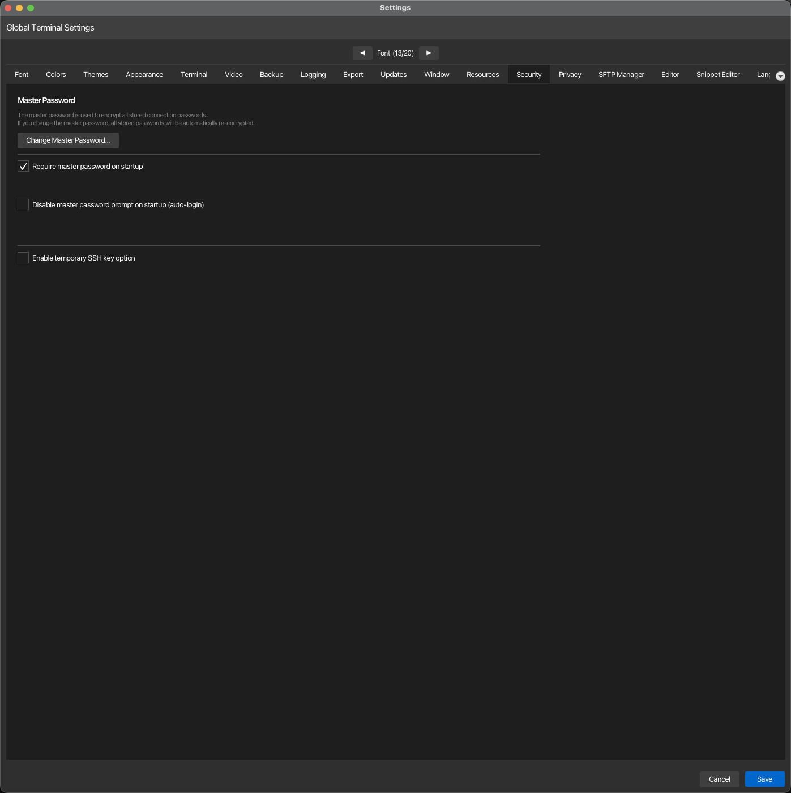

Sicherheit¶
Auf dieser Registerkarte werden die Optionen für die Sicherheit des Passwort-Tresors und die SSH-Schlüsselauthentifizierung verwaltet. Öffnen über Konfiguration → Globale Einstellungen → Sicherheit; in ~/.kortty/global-settings.xml gespeichert.

| Einstellung | Typ | Werte | Standard | Gespeichert als |
|---|---|---|---|---|
| Change Master Password | button | — | — | — |
| Require master password on startup | toggle | — | On | requireMasterPasswordOnStartup |
| Disable master password prompt on startup (auto-login) | toggle | — | Off | skipMasterPasswordPrompt |
| Temporäre SSH-Schlüsseloption aktivieren | umschalten | – | Aus | temporarySshKeyEnabled |
Master-Passwort beim Start
Wenn „Master-Passwort beim Start erforderlich“ deaktiviert ist, können verschlüsselte Passwörter und SSH-Schlüssel nicht automatisch ohne manuelle Passworteingabe entschlüsselt werden. Dies stellt ein Sicherheitsrisiko dar und sollte nur deaktiviert werden, wenn Sie die Konsequenzen verstehen.
Auto-Login speichert Ihr Master-Passwort auf der Festplatte
Enabling "Disable master password prompt on startup" makes korTTY remember your master password — stored only obfuscated (not securely encrypted) in ~/.kortty/master.autounlock with owner-only file permissions — and unlock the vault automatically on every start, with no dialog. Unlike disabling the option above, encrypted data (AI profiles, SSH passwords, credentials) stays usable, because the vault is actually unlocked. The trade-off: anyone who can read your ~/.kortty folder or a backup can then decrypt all saved passwords, SSH keys and API keys — the file permissions are the only remaining protection. On a brand-new profile korTTY sets up a default password automatically, so the app can start with no input at all. korTTY asks you to confirm before enabling it, and it is intended only for throwaway/test environments such as a VM. While auto-login is enabled, Require master password on startup is switched off and greyed out — the two options are mutually exclusive. An enterprise policy that requires a master password overrides this option.
Unbeaufsichtigter erster Start (Automatisierungs-/Test-VMs)
Um korTTY ohne Dialog aufzurufen – selbst bei einem brandneuen Profil, das noch nie freigeschaltet wurde – erstellen Sie ~/.kortty/global-settings.xml vor dem ersten Start mit bereits aktivierter Option:
<?xml version="1.0" encoding="UTF-8" standalone="yes"?>
<globalSettings>
<skipMasterPasswordPrompt>true</skipMasterPasswordPrompt>
</globalSettings>
On that first start korTTY sets up the default master password kortty-auto automatically and unlocks the vault, so scripted or CI runs need no interaction. If you later turn auto-login off on such a profile, kortty-auto is the password to enter — change it immediately via Change Master Password if the profile is meant to live on. Intended for disposable/test environments only — see the security warning above.
Schaltfläche „Master-Passwort ändern“
Opens a dialog asking for the Current Password, the New Password (at least 6 characters) and a Confirm New Password repetition; Change applies it. korTTY rejects a wrong current password, a new password under six characters, and a mismatch between the two new entries, each with its own message. On success it reports how many secrets were re-encrypted: every master-password-protected secret is decrypted with the old password and re-encrypted with the new one — connection passwords and key passphrases, jump-server passwords, SSH-key passphrases, stored credentials, AI-profile API keys and the other AI/translation keys, and RAG and Job Scheduler secrets — so nothing becomes unreadable after the change.
The new password only takes over once every store has been migrated, so an error part-way through leaves the old password in effect instead of locking you out of half your data. If an individual secret cannot be migrated (for example one that was encrypted with a different password), korTTY leaves that value untouched, reports how many items were affected, and notes them in the log — those secrets keep the old password and must be re-entered manually. With auto-login enabled, the remembered password in ~/.kortty/master.autounlock is rewritten to the new master password, so automatic unlocking keeps working after the change.